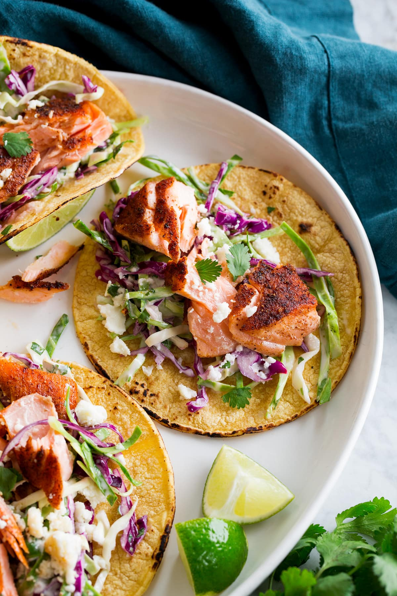

Salmon Tacos

--DESCRIPTION
Grilled salmon wrapped up in a small tortilla, topped with peach-mango salsa, shredded cabbage, avocado, and a special sauce.
INGREDIENTS
Mango Salsa:
- 3 mangoes, diced
- 2 peaches, diced
- 3 poblano peppers, seeded and diced
- Half red onion, diced, or more to taste
- Half lime, juiced, or more to taste
- 1 bunch cilantro, chopped, divided
Special sauce
- 1 container sour cream
- 3 tablespoons mayonnaise
- 1 tablespoon ketchup
- Half teaspoon ground cayenne pepper
- Salt and ground black pepper to taste
- 24 corn tortillas
- Cooking spray
- 2 pounds fresh salmon
- 1 small head cabbage, shredded
- 3 avocados, sliced
- 2 limes, cut into wedges
DIRECTIONS
- Combine mangoes, peaches, poblano peppers, red onion, juice of 1/2 a lime, and 1/2 the cilantro in a large bowl to make mango salsa. Cover with plastic wrap and refrigerate, at least 1 hour, preferably overnight.
- Mix sour cream, mayonnaise, ketchup, cayenne pepper, salt, and black pepper in a small bowl to make special sauce.
- Preheat oven to 350 degrees F (175 degrees C). Arrange tortillas on a baking sheet.
- Preheat a grill pan over medium-high heat; coat with cooking spray. Cook salmon until easily flaked with a fork, about 4 minutes per side. Transfer to a plate and flake into smaller pieces with a fork.
- Heat tortillas in the preheated oven until warmed through, about 5 minutes.
- Divide salmon among tortillas. Top with mango salsa, special sauce, shredded cabbage, avocados, and remaining cilantro. Wrap up tacos and serve lime wedges alongside.